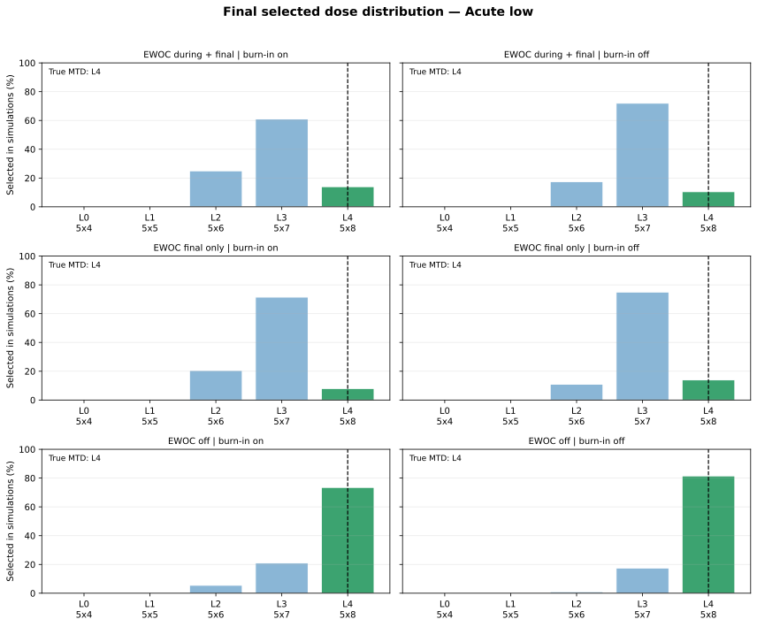
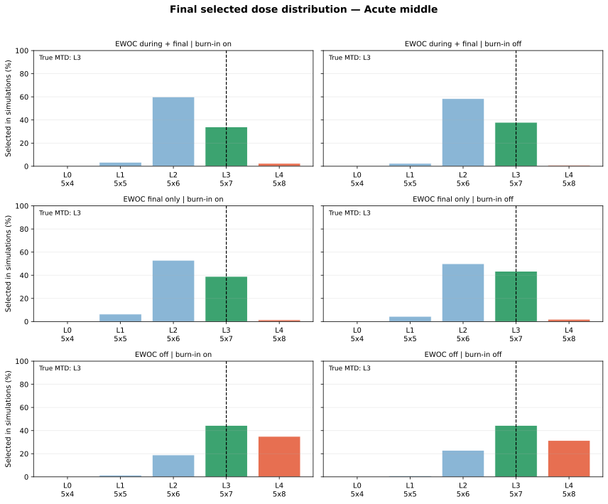
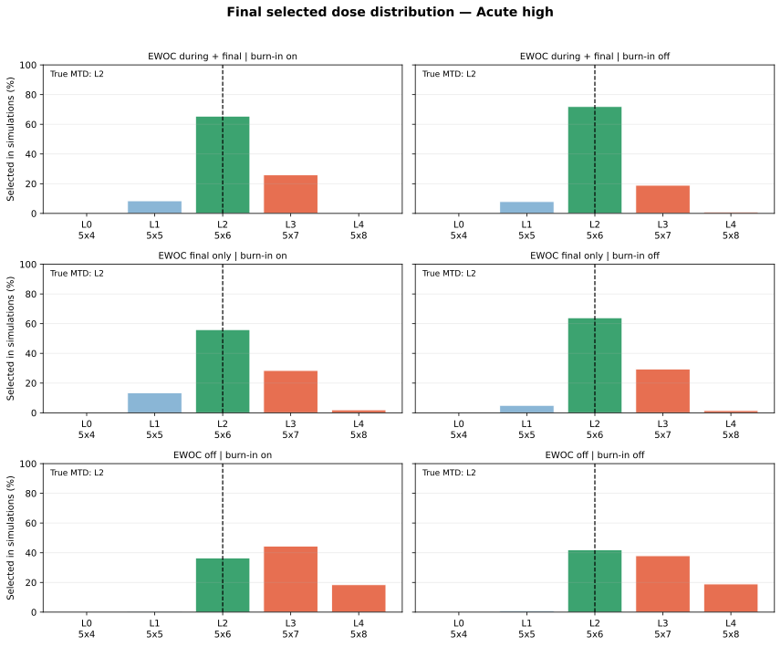
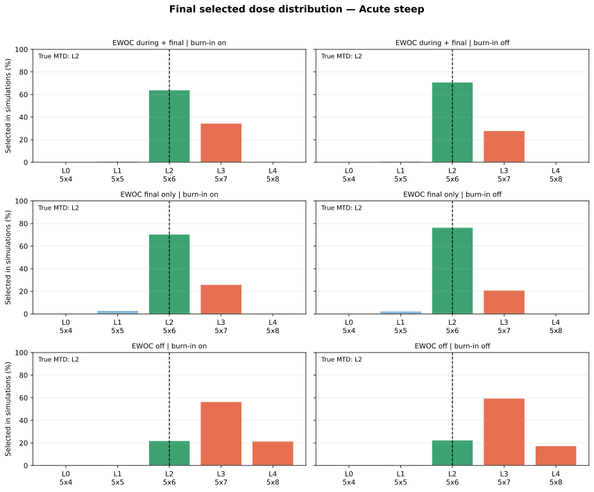
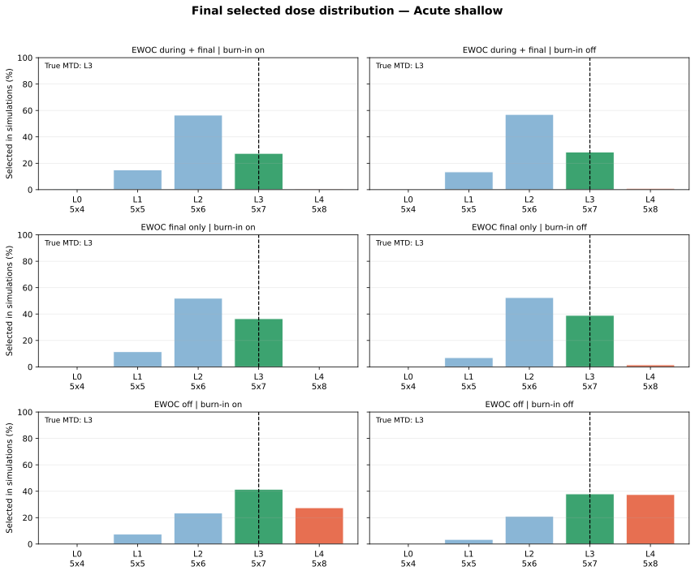

Each simulated trial is initialized with six fully followed patients at L1 (5x5 Gy), zero acute toxicity and zero subacute toxicity. The first new cohort of three patients starts at L2 (5x6 Gy). Maximum sample size is 30 including the six existing patients.
| scenario | ewoc | burn_in | true_mtd_label | correct_mtd_pct | too_high_mtd_pct | too_low_mtd_pct | mean_acute_tox | mean_subacute_tox | mean_n_new | mean_additional_duration_weeks | ewoc_final_downshift_pct |
|---|---|---|---|---|---|---|---|---|---|---|---|
| Acute low | EWOC off | False | L4 (5x8 Gy) | 81.5 | 0.0 | 18.5 | 2.8 | 3.6 | 24.0 | 96.0 | 0.0 |
| Acute low | EWOC off | True | L4 (5x8 Gy) | 73.5 | 0.0 | 26.5 | 2.6 | 3.4 | 24.0 | 96.0 | 0.0 |
| Acute shallow | EWOC final only | True | L3 (5x7 Gy) | 36.5 | 0.0 | 63.5 | 4.3 | 2.7 | 24.0 | 96.0 | 60.0 |
| Acute low | EWOC during + final | True | L4 (5x8 Gy) | 14.0 | 0.0 | 86.0 | 2.1 | 2.7 | 24.0 | 96.0 | 45.5 |
| Acute low | EWOC final only | False | L4 (5x8 Gy) | 14.0 | 0.0 | 86.0 | 2.7 | 3.9 | 24.0 | 96.0 | 75.0 |
| Acute low | EWOC during + final | False | L4 (5x8 Gy) | 10.5 | 0.0 | 89.5 | 2.0 | 2.5 | 24.0 | 96.0 | 37.0 |
| scenario | ewoc | burn_in | true_mtd_label | correct_mtd_pct | too_high_mtd_pct | too_low_mtd_pct | mean_acute_tox | mean_subacute_tox | mean_n_new | mean_additional_duration_weeks | ewoc_final_downshift_pct |
|---|---|---|---|---|---|---|---|---|---|---|---|
| Acute low | EWOC during + final | True | L4 (5x8 Gy) | 14.0 | 0.0 | 86.0 | 2.1 | 2.7 | 24.0 | 96.0 | 45.5 |
| Acute low | EWOC during + final | False | L4 (5x8 Gy) | 10.5 | 0.0 | 89.5 | 2.0 | 2.5 | 24.0 | 96.0 | 37.0 |
| Acute low | EWOC final only | True | L4 (5x8 Gy) | 8.0 | 0.0 | 92.0 | 2.9 | 3.3 | 24.0 | 96.0 | 77.5 |
| Acute low | EWOC final only | False | L4 (5x8 Gy) | 14.0 | 0.0 | 86.0 | 2.7 | 3.9 | 24.0 | 96.0 | 75.0 |
| Acute low | EWOC off | True | L4 (5x8 Gy) | 73.5 | 0.0 | 26.5 | 2.6 | 3.4 | 24.0 | 96.0 | 0.0 |
| Acute low | EWOC off | False | L4 (5x8 Gy) | 81.5 | 0.0 | 18.5 | 2.8 | 3.6 | 24.0 | 96.0 | 0.0 |
| Acute middle | EWOC during + final | True | L3 (5x7 Gy) | 34.0 | 2.5 | 63.5 | 3.3 | 2.5 | 24.0 | 96.0 | 39.5 |
| Acute middle | EWOC during + final | False | L3 (5x7 Gy) | 38.0 | 1.0 | 61.0 | 3.2 | 2.3 | 24.0 | 96.0 | 47.5 |
| Acute middle | EWOC final only | True | L3 (5x7 Gy) | 39.0 | 1.5 | 59.5 | 4.2 | 3.0 | 24.0 | 96.0 | 67.0 |
| Acute middle | EWOC final only | False | L3 (5x7 Gy) | 43.5 | 2.0 | 54.5 | 4.6 | 3.1 | 24.0 | 96.0 | 63.0 |
| Acute middle | EWOC off | True | L3 (5x7 Gy) | 44.5 | 35.0 | 20.5 | 4.2 | 3.0 | 24.0 | 96.0 | 0.0 |
| Acute middle | EWOC off | False | L3 (5x7 Gy) | 44.5 | 31.5 | 24.0 | 4.7 | 3.3 | 24.0 | 96.0 | 0.0 |
| Acute high | EWOC during + final | True | L2 (5x6 Gy) | 65.5 | 26.0 | 8.5 | 3.8 | 2.3 | 24.0 | 96.0 | 40.5 |
| Acute high | EWOC during + final | False | L2 (5x6 Gy) | 72.0 | 20.0 | 8.0 | 4.0 | 2.3 | 24.0 | 96.0 | 41.5 |
| Acute high | EWOC final only | True | L2 (5x6 Gy) | 56.0 | 30.5 | 13.5 | 4.7 | 2.8 | 24.0 | 96.0 | 56.5 |
| Acute high | EWOC final only | False | L2 (5x6 Gy) | 64.0 | 31.0 | 5.0 | 5.1 | 3.0 | 24.0 | 96.0 | 58.0 |
| Acute high | EWOC off | True | L2 (5x6 Gy) | 36.5 | 63.0 | 0.5 | 4.6 | 2.8 | 24.0 | 96.0 | 0.0 |
| Acute high | EWOC off | False | L2 (5x6 Gy) | 42.0 | 57.0 | 1.0 | 5.1 | 2.9 | 24.0 | 96.0 | 0.0 |
| Acute steep | EWOC during + final | True | L2 (5x6 Gy) | 64.0 | 35.0 | 1.0 | 3.4 | 2.4 | 24.0 | 96.0 | 50.5 |
| Acute steep | EWOC during + final | False | L2 (5x6 Gy) | 71.0 | 28.0 | 1.0 | 3.5 | 2.2 | 24.0 | 96.0 | 51.5 |
| Acute steep | EWOC final only | True | L2 (5x6 Gy) | 70.5 | 26.5 | 3.0 | 4.8 | 2.8 | 24.0 | 96.0 | 57.0 |
| Acute steep | EWOC final only | False | L2 (5x6 Gy) | 76.5 | 21.0 | 2.5 | 5.4 | 3.3 | 24.0 | 96.0 | 68.0 |
| Acute steep | EWOC off | True | L2 (5x6 Gy) | 22.0 | 78.0 | 0.0 | 4.5 | 2.9 | 24.0 | 96.0 | 0.0 |
| Acute steep | EWOC off | False | L2 (5x6 Gy) | 22.5 | 77.0 | 0.5 | 5.1 | 3.1 | 24.0 | 96.0 | 0.0 |
| Acute shallow | EWOC during + final | True | L3 (5x7 Gy) | 27.5 | 0.5 | 72.0 | 3.9 | 2.3 | 24.0 | 96.0 | 44.5 |
| Acute shallow | EWOC during + final | False | L3 (5x7 Gy) | 28.5 | 1.0 | 70.5 | 3.8 | 2.2 | 24.0 | 96.0 | 42.5 |
| Acute shallow | EWOC final only | True | L3 (5x7 Gy) | 36.5 | 0.0 | 63.5 | 4.3 | 2.7 | 24.0 | 96.0 | 60.0 |
| Acute shallow | EWOC final only | False | L3 (5x7 Gy) | 39.0 | 1.5 | 59.5 | 4.6 | 2.8 | 24.0 | 96.0 | 66.0 |
| Acute shallow | EWOC off | True | L3 (5x7 Gy) | 41.5 | 27.5 | 31.0 | 4.2 | 2.6 | 24.0 | 96.0 | 0.0 |
| Acute shallow | EWOC off | False | L3 (5x7 Gy) | 38.0 | 37.5 | 24.5 | 4.4 | 3.3 | 24.0 | 96.0 | 0.0 |
Bars show the percentage of simulations selecting each final dose level. Green indicates the scenario-specific true MTD, blue lower selections, and red higher selections. The dashed vertical line marks the true MTD.





| scenario | ewoc | burn_in | true_mtd_label | sel_L0_pct | sel_L1_pct | sel_L2_pct | sel_L3_pct | sel_L4_pct |
|---|---|---|---|---|---|---|---|---|
| Acute low | EWOC during + final | True | L4 (5x8 Gy) | 0.0 | 0.0 | 25.0 | 61.0 | 14.0 |
| Acute low | EWOC during + final | False | L4 (5x8 Gy) | 0.0 | 0.0 | 17.5 | 72.0 | 10.5 |
| Acute low | EWOC final only | True | L4 (5x8 Gy) | 0.0 | 0.0 | 20.5 | 71.5 | 8.0 |
| Acute low | EWOC final only | False | L4 (5x8 Gy) | 0.0 | 0.0 | 11.0 | 75.0 | 14.0 |
| Acute low | EWOC off | True | L4 (5x8 Gy) | 0.0 | 0.0 | 5.5 | 21.0 | 73.5 |
| Acute low | EWOC off | False | L4 (5x8 Gy) | 0.0 | 0.0 | 1.0 | 17.5 | 81.5 |
| Acute middle | EWOC during + final | True | L3 (5x7 Gy) | 0.0 | 3.5 | 60.0 | 34.0 | 2.5 |
| Acute middle | EWOC during + final | False | L3 (5x7 Gy) | 0.0 | 2.5 | 58.5 | 38.0 | 1.0 |
| Acute middle | EWOC final only | True | L3 (5x7 Gy) | 0.0 | 6.5 | 53.0 | 39.0 | 1.5 |
| Acute middle | EWOC final only | False | L3 (5x7 Gy) | 0.0 | 4.5 | 50.0 | 43.5 | 2.0 |
| Acute middle | EWOC off | True | L3 (5x7 Gy) | 0.0 | 1.5 | 19.0 | 44.5 | 35.0 |
| Acute middle | EWOC off | False | L3 (5x7 Gy) | 0.0 | 1.0 | 23.0 | 44.5 | 31.5 |
| Acute high | EWOC during + final | True | L2 (5x6 Gy) | 0.0 | 8.5 | 65.5 | 26.0 | 0.0 |
| Acute high | EWOC during + final | False | L2 (5x6 Gy) | 0.0 | 8.0 | 72.0 | 19.0 | 1.0 |
| Acute high | EWOC final only | True | L2 (5x6 Gy) | 0.0 | 13.5 | 56.0 | 28.5 | 2.0 |
| Acute high | EWOC final only | False | L2 (5x6 Gy) | 0.0 | 5.0 | 64.0 | 29.5 | 1.5 |
| Acute high | EWOC off | True | L2 (5x6 Gy) | 0.0 | 0.5 | 36.5 | 44.5 | 18.5 |
| Acute high | EWOC off | False | L2 (5x6 Gy) | 0.0 | 1.0 | 42.0 | 38.0 | 19.0 |
| Acute steep | EWOC during + final | True | L2 (5x6 Gy) | 0.0 | 1.0 | 64.0 | 34.5 | 0.5 |
| Acute steep | EWOC during + final | False | L2 (5x6 Gy) | 0.0 | 1.0 | 71.0 | 28.0 | 0.0 |
| Acute steep | EWOC final only | True | L2 (5x6 Gy) | 0.0 | 3.0 | 70.5 | 26.0 | 0.5 |
| Acute steep | EWOC final only | False | L2 (5x6 Gy) | 0.0 | 2.5 | 76.5 | 21.0 | 0.0 |
| Acute steep | EWOC off | True | L2 (5x6 Gy) | 0.0 | 0.0 | 22.0 | 56.5 | 21.5 |
| Acute steep | EWOC off | False | L2 (5x6 Gy) | 0.0 | 0.5 | 22.5 | 59.5 | 17.5 |
| Acute shallow | EWOC during + final | True | L3 (5x7 Gy) | 0.5 | 15.0 | 56.5 | 27.5 | 0.5 |
| Acute shallow | EWOC during + final | False | L3 (5x7 Gy) | 0.0 | 13.5 | 57.0 | 28.5 | 1.0 |
| Acute shallow | EWOC final only | True | L3 (5x7 Gy) | 0.0 | 11.5 | 52.0 | 36.5 | 0.0 |
| Acute shallow | EWOC final only | False | L3 (5x7 Gy) | 0.0 | 7.0 | 52.5 | 39.0 | 1.5 |
| Acute shallow | EWOC off | True | L3 (5x7 Gy) | 0.0 | 7.5 | 23.5 | 41.5 | 27.5 |
| Acute shallow | EWOC off | False | L3 (5x7 Gy) | 0.0 | 3.5 | 21.0 | 38.0 | 37.5 |